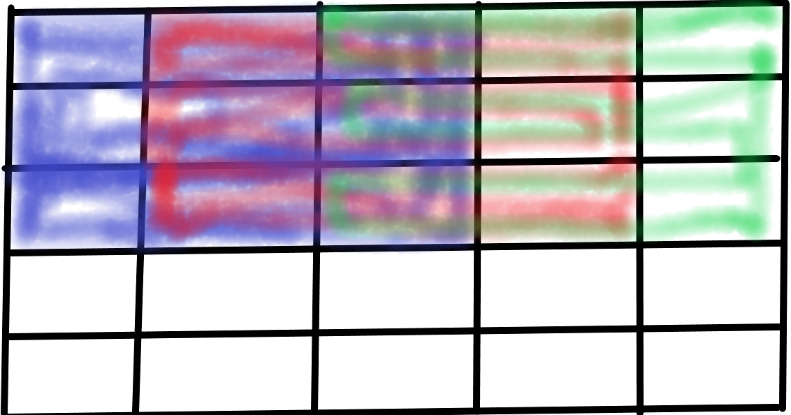

tf.nn.conv2d
tf.nn.conv2d函数用于实现2D卷积运算
输入X:[b,h,w,cin]
卷积核W:[k,k,cin,cout]
输出O:[b,h',w',cout]
其中，cin表示输入通道数，cout表示卷积核的数量，也是输出特征图的通道数
卷积核大小为k*k
1 | import tensorflow as tf |
1 | print(out.shape)#2是2张图片 |
1 | TensorShape([2, 3, 3, 4]) |
2代表2张图片，3*3便是卷积（步长为1，padding为0）之后的图像大小，4是代表用4各卷积核作用。下图以其中一个卷积核为例，展示了卷积的过程（先左右，再上下）

5*5的图像经过卷积核的作用之后就会变成3*3大小。
其中 padding 参数的设置格式为： padding=[[0,0],[上,下],[左,右],[0,0]]
特别地， 通过设置参数padding='SAME'、strides=1 可以直接得到输入、 输出同大小的卷积层， 其中 padding的具体数量TensorFlow自动计算并完成填充操作
1 | x=tf.random.normal([2,5,5,3])# 模拟输入， 3 通道，高宽为 5，2张图片 |
1 | TensorShape([2, 5, 5, 4]) |
此时，5*5尺寸的图像输入，经卷积，得到和原尺寸一样的输出。
layers.Conv2D
通过卷积层类layers.Conv2D 可以不需要手动定义卷积核𝑾和偏置𝒃张量，直接调用类 实例即可完成卷积层的前向计算， 实现更加高层和快捷。 在 TensorFlow 中， API 的命名有 一定的规律， 首字母大写的对象一般表示类，全部小写的一般表示函数，如 layers.Conv2D 表示卷积层类， nn.conv2d 表示卷积运算函数。 使用类方式会(在创建类时或 build 时)自动 创建需要的权值张量和偏置向量等， 用户不需要记忆卷积核张量的定义格式，因此使用起 来更简单方便，但是灵活性也略低。函数方式的接口需要自行定义权值和偏置等，更加灵 活和底层
1 | #4个3*3大小的卷积核 |
如果卷积核高宽不等，步长行列方向不等，此时需要将kernel_size 参数设计为 tuple 格式(𝑘ℎ 𝑘𝑤)，strides 参数设计为(𝑠ℎ 𝑠𝑤)。 如下创建4 个3 ×3 大小的卷积核，竖直方向移 动步长𝑠ℎ = 2，水平方向移动步长𝑠𝑤 = 1
1 | layer = layers.Conv2D(4,kernel_size=(3,4),strides=(2,1),padding='SAME') |
创建完成后，通过调用实例(的__call__方法)即可完成前向计算
1 | # 创建卷积层类 |
1 | TensorShape([2, 5, 5, 4]) |
这个和上一部分图解的那个例子是一样的
在类Conv2D 中，保存了卷积核张量𝑾和偏置𝒃，可以通过类成员 trainable_variables 直接返回𝑾和𝒃的列表
1 | # 返回所有待优化张量列表 |
1 | [<tf.Variable 'conv2d_3/kernel:0' shape=(3, 3, 3, 4) dtype=float32, numpy= |
也可以通过下面的方式分别对权重和偏置进行访问 :
查看权重：
1 | layer.kernel |
1 | <tf.Variable 'conv2d_3/kernel:0' shape=(3, 3, 3, 4) dtype=float32, numpy= |
查看偏置：
1 | layer.bias |
1 | <tf.Variable 'conv2d_3/bias:0' shape=(4,) dtype=float32, numpy=array([0., 0., 0., 0.], dtype=float32)> |
总结
两种方法都能实现卷积层，前者是tf的，后者是其高层API,，即Keras中的。